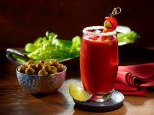
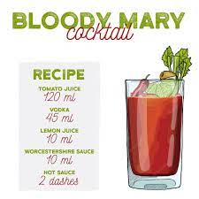

Bloody Mary

Ingredients:
- Vodka 45 ml
- Tomato Juice 120 ml
- Lemon Juice 10 ml
- Worchestershire Sauce 10 ml
- Hot Sauce 2 dashes
- Crushed Ice 100 ml
Steps:
- On a cold glass, put the ice
- Mix the tomato and lemon juice, vodka, Worchestershire Sauce
- Pour the mix into the glass, put the Hot Sauce drops and stir
- Now it is ready to be drinked!
- ENJOY

Back to Homepage